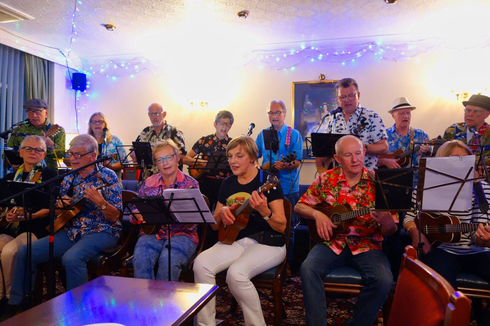
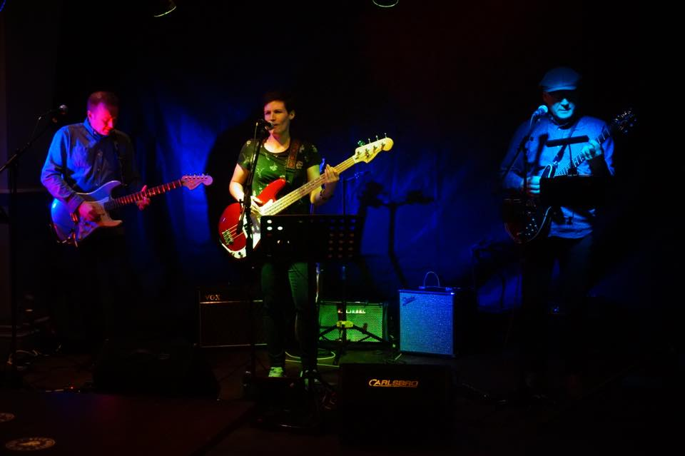

<!-- Main -->
	<div id="main" class="wrapper orangepurple">
		<div class="container">
			<div class="row">

				<!-- Sidebar -->
				<div id="sidebar" class="4u sidebar">
					<section>
						<!-- <header class="major">
							<h2>Mauris vulputate</h2>
						</header> -->
						<ul class="default">
              <li><a href="#sicknotes">The Sicknotes</a></li>
              <li><a href="#nat-antag">Natural Antagonists</a></li>
              <li><a href="#shab">Shab Hussain</a></li>
              <li><a href="#yorkuleles">Yorkuleles</a></li>
              <li><a href="#kingzilla">Band Formed Of Members Of The Bands Formerly Known As Kingzilla and Honeybuzzard</a></li>
              <li><a href="renames">The Renames</a></li>
              <li><a href="#chris">Chris Foster & Sarah</a></li>
              <li><a href="#glamchop">Glamchop</a></li>
						</ul>
					</section>
				</div>

				<!-- Content -->
				<div id="content" class="8u skel-cell-important">
					<section>
						<header class="major">
							<h2>{{ page.title }}</h2>
							<span class="byline">Some of the many musical acts you can see at Cawoodstock 2018</span>
						</header>
            <li class="underlined">
              <h3><a name="nat-antag">Natural Antagonists</a></h3>
              <p>"a blend of melodic guitar and vocal harmonies performing original and well-known material"</p>
            </li>
            <li class="underlined">
              <h3><a name="shab">Shab Hussain</a></h3>
              
              <p>Cawood's own Elvis!
              <a href="https://www.facebook.com/shahab.hussain.399"><i class="fab fa-facebook"></i></a></p>
            </li>
            <li class="underlined">
              <h3><a name="sicknotes">The Sicknotes</a></h3>
              
              <p>Varied covers in their own famous 'ramshackle' style - from pop tunes to danceable swing-a-billy and cool sultry jazz</p>
              <p>Lineup: Emma Plews (Vocals, Cup), Freya Storr (Drums), Kerrie Hewick (Vocals, Uke), Marcus Baw (Guitar), Patrick Morris (Double Bass)</p>
            </li>
            <li class=underlined>
              <h3><a name="yorkuleles">Yorkuleles</a></h3>
              
              <p>York-based Ukulele Club and Orchestra</p>
              <p><a href="https://www.yorkuleles.co.uk">www.yorkuleles.co.uk</a>
              <a href="https://www.facebook.com/yorkuleles/"><i class="fab fa-facebook"></i></a></p>
            </li>
            <li class="underlined">
              <h3><a name="kingzilla">Band Formed Of Members Of The Bands Formerly Known As Kingzilla and Honeybuzzard</a></h3>
              
              <p>Guitar-based rock and blues with wailing blues-harp and vocals</p>
              <p>Contact: Paul Featherstone via FB</p>
            </li>
            <li class="underlined">
              <h3><a name="renames">The Renames</a></h3>
              
              <p>"Soft and country rock favourites plus a few of our own songs thrown in"</p>
              <a href="https://www.facebook.com/pg/theremainsyork/posts/?ref=page_internal"><i class="fab fa-facebook"></i></a>
            </li>
            <li class="underlined">
              <h3><a name="chris">Chris Foster & Sarah</a></h3>
              
              <p>Cawoodian jazzy piano and vocal duo</p>
              <p>Contact: Chris via FB</p>
            </li>
            <li class="underlined">
              <h3><a name="glamchop">Glamchop</a></h3>
              
              <p>Style: Rock/pop/oldies/varied</p>
            </li>
					</section>
				</div>

			</div>
		</div>
	</div>
